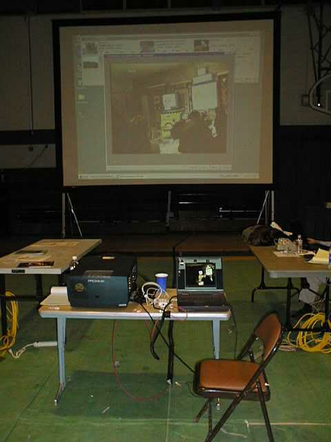

Dine' College becomes the "first" Tribal College to setup and utilize the Access Grid
 President Clinton returned to New Mexico and became the first presiding President to visit the Navajo Nation. During his address to the Navajo Nation, President Clinton pledged to bring attention and corporate funding to the digital divide. The digital divide is a growing situation to less affluent regions that can not afford the infrastructure for telecommunications. As a result, the ability to get information and compete for industry becomes increasingly difficult.He recognized how the Internet can be used to extend classrooms. In his visit, he stressed that technologies can now bring communities, teachers, students, doctors, patients, and many other collaborations together. On April 17, 2000, In an unprecedented collaboration of Alliance members, the AHPCC and Dine' College, set an example of collaboration to bridge the Native American Digital Divide. Two teams of technicians from the Alliance (UNM/AHPCC & Argonne National Laboratory) and Dine' College (Tsaile, Az & Shiprock, NM) set up the "first" Tribal College Access node. The Dine' College side of the President's webcast, was multicast through the Access Grid to the University of New Mexico, Maui High Performance Computing Center, Boston University, Argonne National Laboratory, and University of Kentucky. The Alliance's goal is for teachers to utilize the Alliance's collaborative tools and for students to be able to participate in high performance computing classes through the Access Grid. The pictures above were captured off of the Access Grid node, during President Clinton's webcast. |
||||||


| The
University of New Mexico Albuquerque High Performance Computing Center Galles Building - 1601 Central Avenue, NE Albuquerque, NM 87131 Phone # 505.277.8249000000Fax # 505.277.8235 |
Last
Modified: July 31, 2000
|